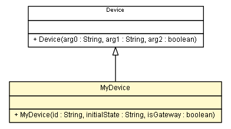

es.upm.dit.gsi.shanks.model.element.device.test
Class MyDevice

java.lang.Object
 es.upm.dit.gsi.shanks.model.element.NetworkElement
es.upm.dit.gsi.shanks.model.element.device.Device
es.upm.dit.gsi.shanks.model.element.device.test.MyDevice
es.upm.dit.gsi.shanks.model.element.NetworkElement
es.upm.dit.gsi.shanks.model.element.device.Device
es.upm.dit.gsi.shanks.model.element.device.test.MyDevice
public class MyDevice
- extends Device
- Author:
- a.carrera
| Methods inherited from class es.upm.dit.gsi.shanks.model.element.NetworkElement |
addPossibleStatus, addProperty, changeProperty, getID, getPossibleStates, getProperties, getProperty, getStatus, removePossibleStatus, setCurrentStatus, setCurrentStatus, setID, setProperties, setUniversalSituation, updatePropertyTo, updatePropertyTo, updateStatusTo, updateStatusTo |
| Methods inherited from class java.lang.Object |
clone, equals, finalize, getClass, hashCode, notify, notifyAll, toString, wait, wait, wait |
OK_STATUS
public static final String OK_STATUS
- See Also:
- Constant Field Values
NOK_STATUS
public static final String NOK_STATUS
- See Also:
- Constant Field Values
UNKOWN_STATUS
public static final String UNKOWN_STATUS
- See Also:
- Constant Field Values
HIGH_TEMP_STATUS
public static final String HIGH_TEMP_STATUS
- See Also:
- Constant Field Values
OS_PROPERTY
public static final String OS_PROPERTY
- See Also:
- Constant Field Values
TEMPERATURE_PROPERTY
public static final String TEMPERATURE_PROPERTY
- See Also:
- Constant Field Values
MyDevice
public MyDevice(String id,
String initialState,
boolean isGateway)
throws ShanksException
- Parameters:
id - initialState - isGateway -
- Throws:
ShanksException
setPossibleStates
public void setPossibleStates()
- Specified by:
setPossibleStates in class NetworkElement
fillIntialProperties
public void fillIntialProperties()
- Specified by:
fillIntialProperties in class NetworkElement
checkProperties
public void checkProperties()
throws ShanksException
- Specified by:
checkProperties in class NetworkElement
- Throws:
ShanksException
checkStatus
public void checkStatus()
throws ShanksException
- Specified by:
checkStatus in class NetworkElement
- Throws:
ShanksException
Copyright © 2011-2013 Grupo de Sistemas Inteligentes - Universidad Politécnica de Madrid. All Rights Reserved.